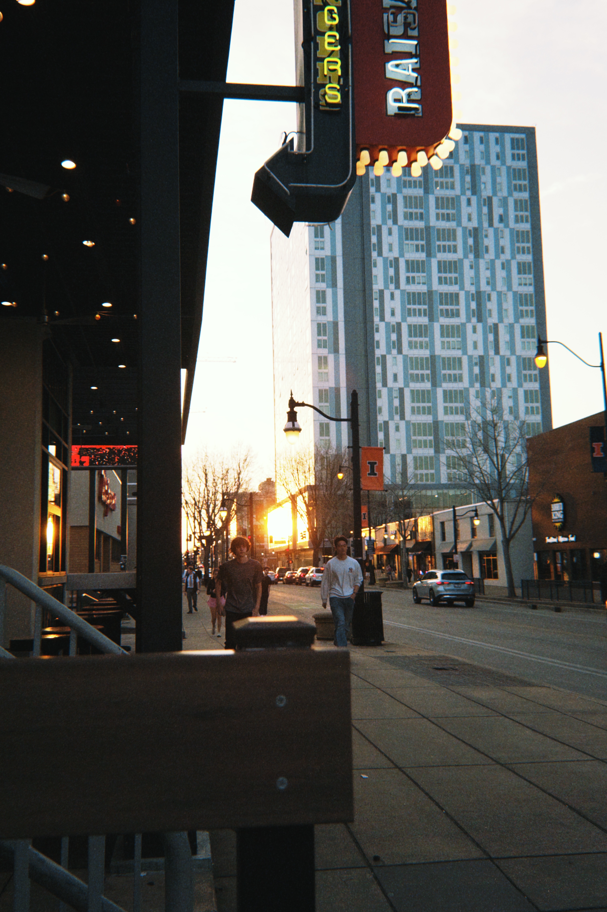
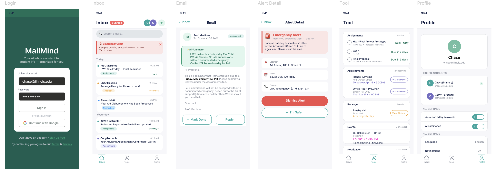
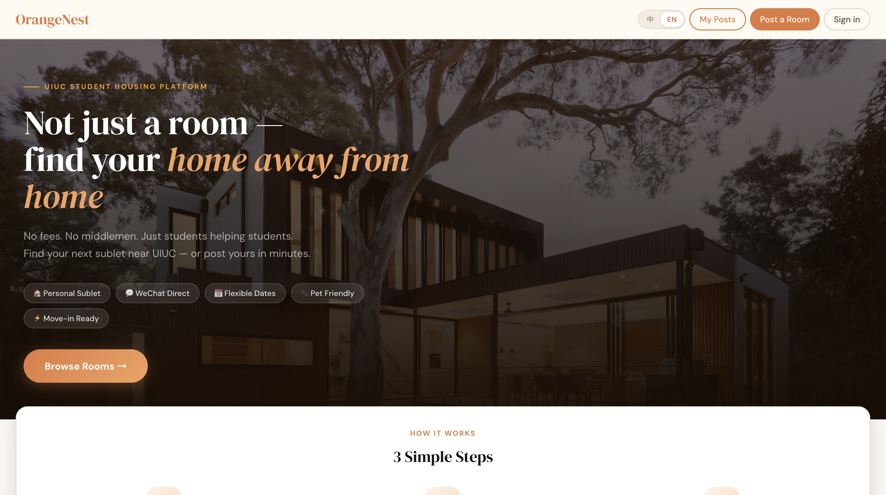
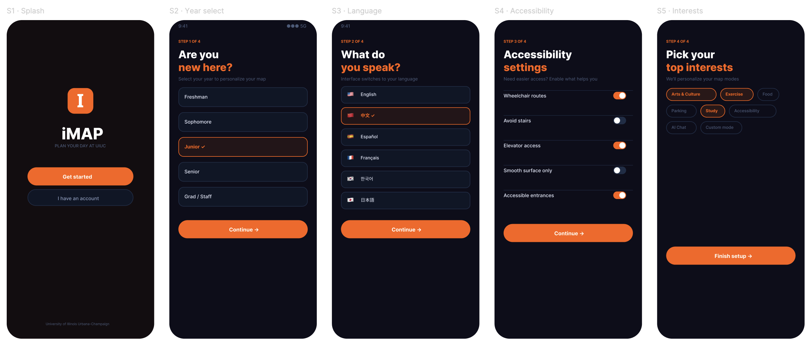
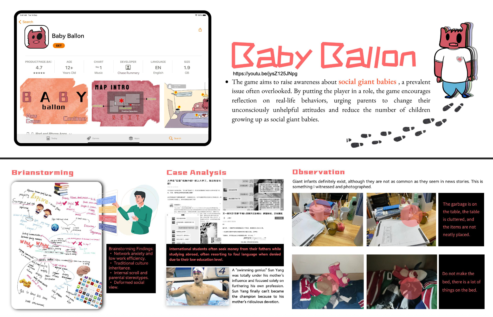
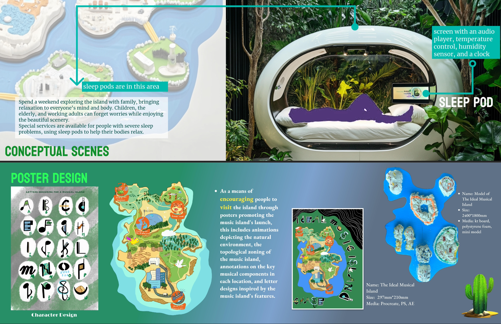
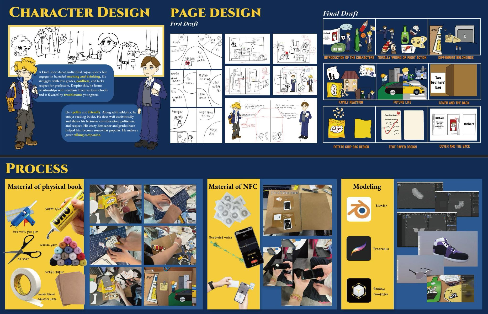
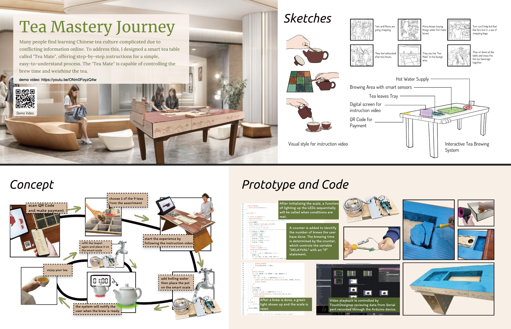

CHASE XINRU
RUMMERY 项心如
I design interfaces and the information underneath them, so people find what they came for.
Three projects, one of them live with real users. I run the research, design the interface, and build enough of the front end that engineers don't have to guess what I meant. Bilingual, so I can run studies in English or Mandarin.
Selected work, open any of them
Everything lands in the inbox, so nothing stands out. MailMind pulls the deadlines, package pickups and alerts into one list — no digging. Three iterations; presented at the iSchool Lightning Talk, May 2026.

Sublease posts sit scattered across WeChat groups, in the wrong language, with no way to filter for pets. I had looked for a place myself and knew how bad it was, so I built the platform from scratch: listings, calendar and map, a three-step post form, and cards you can forward straight into WeChat. Design and front end are mine; Supabase behind it.

Campus maps only get you to the building — not whether the route is accessible, whether the library has seats, or which way to walk in the rain. iMAP folds all of that in and switches to indoor routes when it rains. Five peer interviews, usability testing, and iteration up to WCAG standards.

Paste an email. Watch MailMind handle it.
Deadlines, package pickups, meeting times — extracted automatically and ranked by urgency. This is really running, not a screenshot.
Five smaller things — drag them around

R311 Baby Balloon Game

K5 Tea Mate Arduino

R311 Two Brothers’ Diary NFC + book

K5 Musical Island Model
K5 Chongqing home
GET IN
TOUCH
Raised in Chongqing, in Champaign since 2025. I started in Studio Art doing New Media, then moved into Information Sciences in my second year — the making came first, the structure came after. Growing up in two languages trained an instinct: say the same thing differently and people can suddenly find it. Later I learned that has a name — information architecture.
My habit: work out what exists, who uses it and how they would look for it, then design the interface. When something should exist and nobody has built it, I build it — that is how OrangeNest happened.
Off campus hours I play for and manage the UIUC Hot Pot women's basketball team, and make its design work.